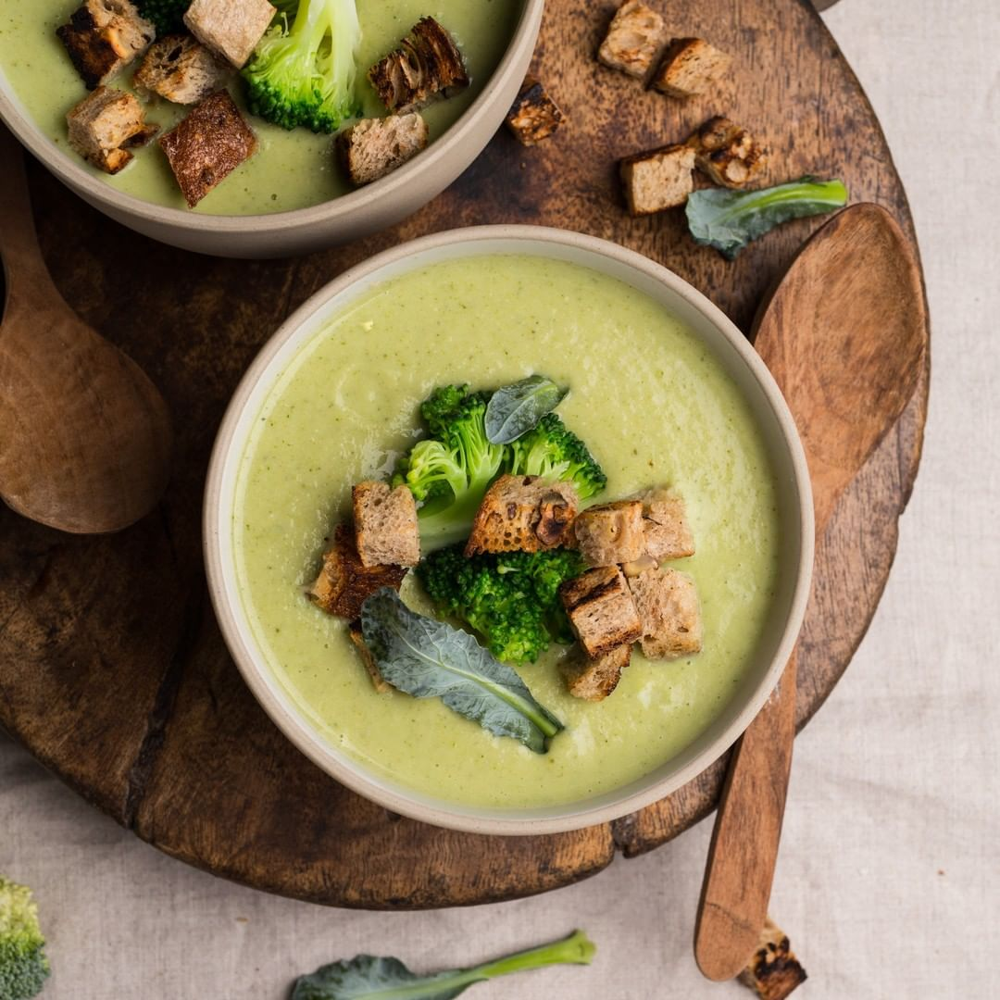

Zimná polievka podľa @jemezdravo.eu — Normy Jedál
Ideálná polievka na zahriatie.
🥦 Brokolicová polievka 🥦
Príprava: 10 minút
Tepelná úprava: 21 minút
Náročnosť: ľahké
Počet porcií: 4
Nutričné informácie na 1 porciu: 246 kcal 10,1 g bielkovín 22,9 g sacharidov 13 g tukov
INGREDIENCIE:
1 stredná biela cibuľa
2 lyžice olivového oleja
2 strúčiky cesnaku (roztlačené)
700 ml zeleninového vývaru
ružičky z jednej hlávky brokolice
1 vajce
soľ
čierne korenie
POSTUP PRÍPRAVY:
1. Cibuľu očistíme a nakrájame najemno.
2. V hrnci rozohrejte 2 lyžice olivového oleja, teplotu znížte na mierny stupeň, pridajte nakrájanú cibuľu a pražte ju cca 5 minút.
3. Pridajte roztlačené strúčiky cesnaku a restujte ešte minútu.
4. Všetko zalejte zeleninovým vývarom, pridajte ružičky brokolice a varte 10 – 15 minút na strednom stupni. Uvarenú polievku osoľte, okoreňte a hrniec odstavte.
5. Do hrnca rozklepnite vajce a polievku ihneď rozmixujte ponorným mixérom. Ak chcete mať polievku redšiu, môžete ju zriediť vodou.
TIP: Polievku podávajte s celozrnnými krutónmi.
#polievka #polievky #brokolica #brokolicovapolievka #nazahratie #polievkajezaklad #laskavevarenie #januar #zimnapolievka #zima #chutnyobed #brokolicova #zdravyzivotnystyl #zdravapolievka #obycajnejedlo #varimpreradost
#precelurodinu #milujemvarenie #zdravie #zdravienatanieri #desiata #slovakia #zdravetelo
#jedlo #toprecepty #jemprelepsisvet #varimeslaskou #zdravejedlo #zdravyrecept #varimzdravo